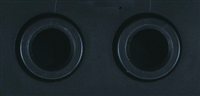
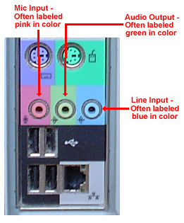
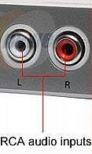
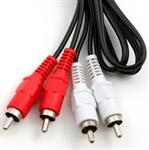
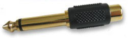
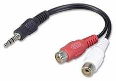

piano101 - audio cable hookup
Here's your keyboard's audio:
2 of these 1/4" mono female jacks for audio out
Here's your PC's audio:

there's a 1/8" stereo female jack each for [audio in], [audio out], and [mic in]. I don't use microphone in.
Here's your stereo:

2 of these rca female jacks for audio in
They look pretty frustratingly different !! But in general stereo audio needs to go from Keyboard => PC => stereo (or powered speakers)
You usually use rca cables between em:

And usually two adapters for your keyboard's 1/4" mono plugs.
(Two of these to get a stereo rca female jack pair)

And usually an adapter to go from dual rca female to 1/8" stereo male

overall
things string out like this...
then
- 2 of these
then
then
then
then
then
then
Mixer
When you get more than one instrument involved (microphone, drums, guitar, etc), now you need a mixer.
Everything goes into the mixer. (Including PC audio out from your softsynth)
And the output goes to your stereo, headphones, and PC Audio in (to record).
next: midi cable hookup home